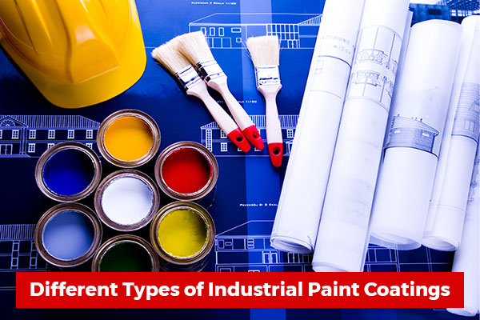

Introduction:
Paints and coatings are used in a variety of applications, from protecting buildings and infrastructure to enhancing the appearance of consumer products. However, their production, use, and disposal can have significant environmental and social impacts. Sustainable development aims to address these impacts by promoting sustainable practices in the paints and coatings industry.
Sustainable practices in the paints and coatings industry:
Water-based coatings: Water-based coatings are less harmful to the environment and human health than solvent-based coatings. They are also easier to clean up and dispose of.
Low VOC coatings: Coatings with low levels of volatile organic compounds (VOCs) are less harmful to the environment and human health than high VOC coatings.
Sustainable raw materials: Using sustainable raw materials in paints and coatings production can help to reduce the environmental impact of their production.
Sustainable packaging: Implementing sustainable packaging practices can help to reduce the environmental impact of paints and coatings by reducing waste and promoting recycling.
Extended producer responsibility: Implementing extended producer responsibility programs can help to reduce the environmental impact of paints and coatings disposal by requiring manufacturers to take responsibility for the end-of-life management of their products.
Benefits of sustainable practices in the paints and coatings industry:
Environmental protection: Sustainable practices in the paints and coatings industry can help to reduce the environmental impact of production, use, and disposal of these products.
Social progress: Sustainable practices in the paints and coatings industry can promote social progress by improving the health and well-being of workers and local communities.
Economic growth: Sustainable practices in the paints and coatings industry can create new industries and jobs in sustainable practices, leading to economic growth and job creation.
Public health: Sustainable practices in the paints and coatings industry can help to promote public health by reducing the environmental and social impacts of these products.
Conclusion:
Sustainable development aims to address the environmental and social impacts of paints and coatings production, use, and disposal. Key strategies for achieving sustainability in the paints and coatings industry include using water-based and low VOC coatings, sustainable raw materials, sustainable packaging, and implementing extended producer responsibility programs. Achieving sustainability in the paints and coatings industry has several benefits, including environmental protection, social progress, economic growth, and improved public health.